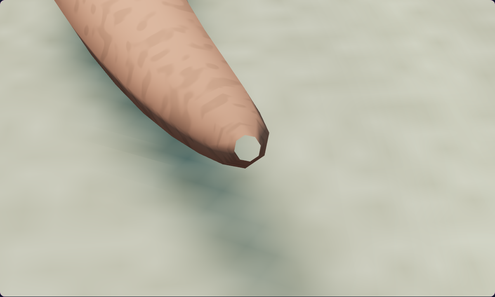
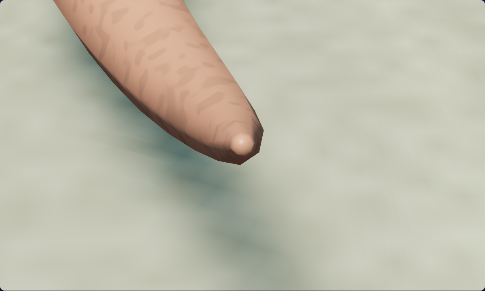
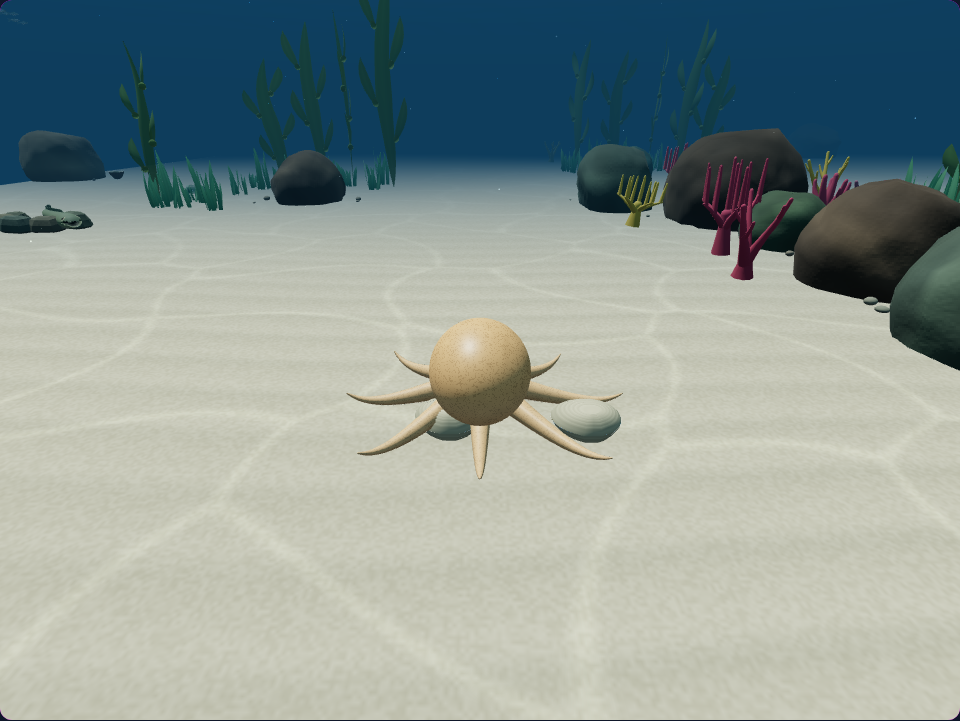
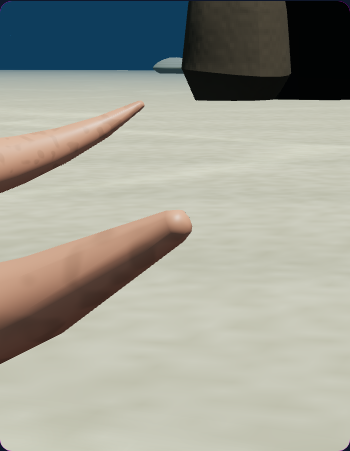

Cephalopod Hunter · Pass 66
A cleaner close-up.
The octopus arms now end in rounded skin, closing the small holes visible at their tips. The finish follows each arm through crawling, jets, squeezing and grasping.
Closed, rounded arm tips
Compare the same arm and pose. Magnified views make the former opening easy to see; the full animal view shows the result in context.

Previous
UpdatedNative rendering with matching diagnostic cameras. Original arm surfaces, movement and sucker attachments are unchanged. The rounded ends add no meshes, materials or draw calls.

Actual keyboard interaction · two native clamsFresh work for a new clam
Beginning work on another clam now resets unfinished drilling and closes the previous shell. Progress no longer jumps from one clam to the next.
Resuming the same clam still keeps its remaining progress. Moving interrupts drilling, and finishing a meal awards the reward once.
Checked through motion
The geometry checks cover all six reef octopuses, including compressed arms and close, rearward and upward grasps. Swimming species retain their existing models.
46 tests passed8 native checksUncommittedDesktop and narrow viewport browser checks; no physical-device performance or audio assessment.

Narrow viewport · magnified tip